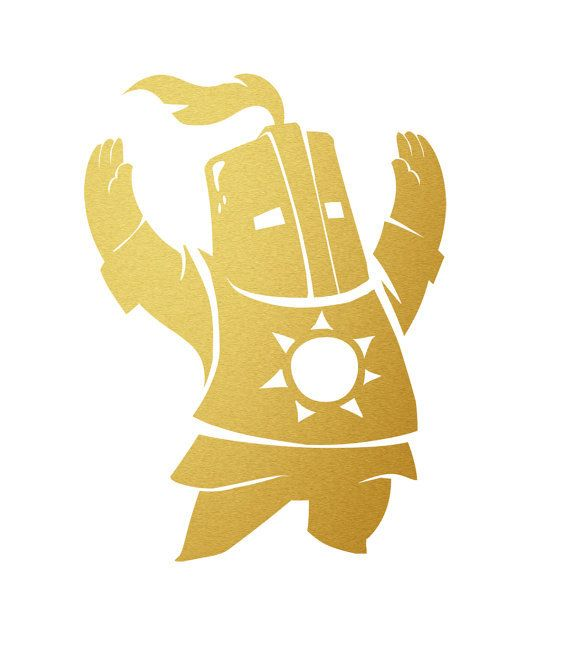

초보자들이 할만한 게임들!
1. 다크소울
2. 로보토미 코퍼레이션
3. 산소미포함
다크소울
《다크 소울》(Dark Souls)은 액션 롤플레잉 비디오 게임의 하나로, 플레이스테이션 3, 엑스박스 360, 마이크로소프트 윈도우용으로 프롬 소프트웨어가 개발하고 반다이 남코 엔터테인먼트가 배급하였다. 프롬소프트웨어의 《데몬즈 소울》에 대한 정신적 후속작으로서, 소울 시리즈 가운데 두 번째 게임이다. 다크 소울은 프로젝트 다크(Project Dark)라는 가제목을 붙여서 개발을 시작하였다. 이 게임은 2011년 9월 일본에서 자체 배급, 출시되었으며, 그 다음 달에 남코 반다이 게임즈에 의해 전 세계에 출시되었다. 2018년 5월에 리마스터 버전이 출시되었다.
출처: 위키피디아
